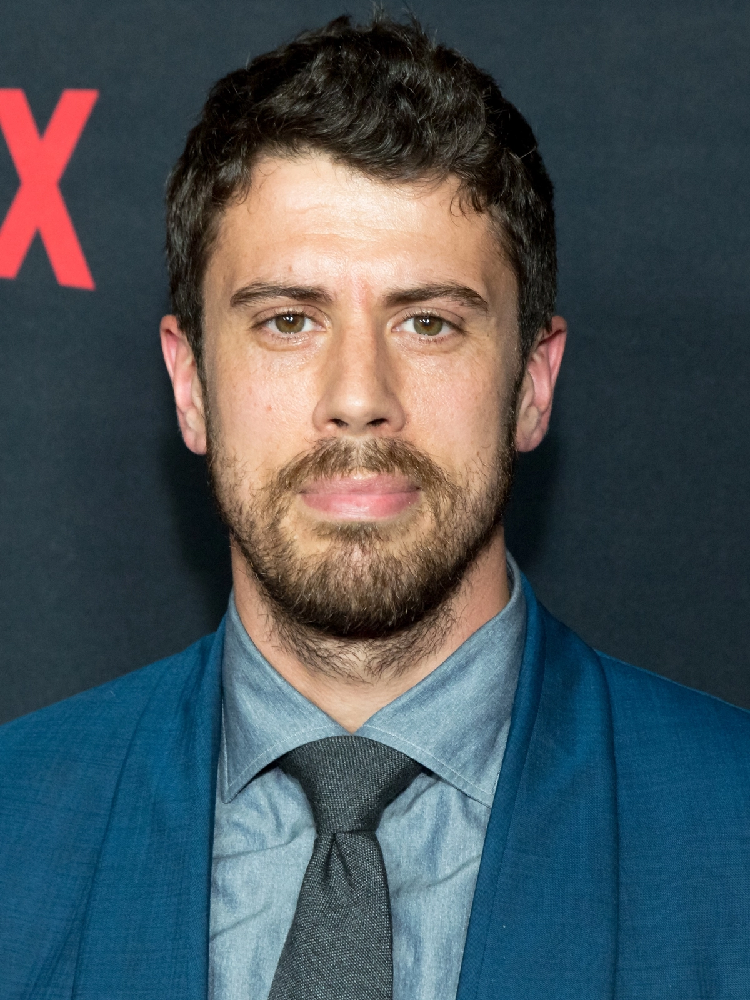
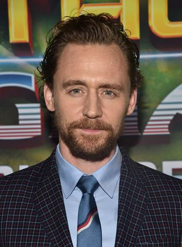
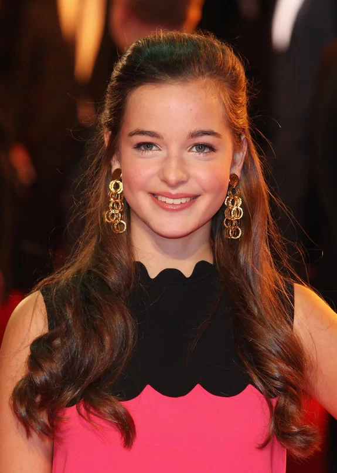
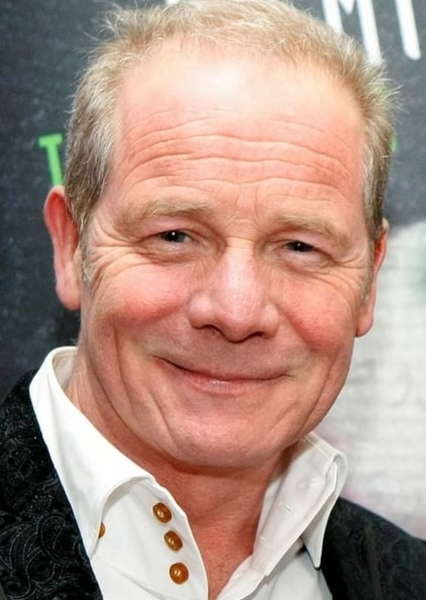
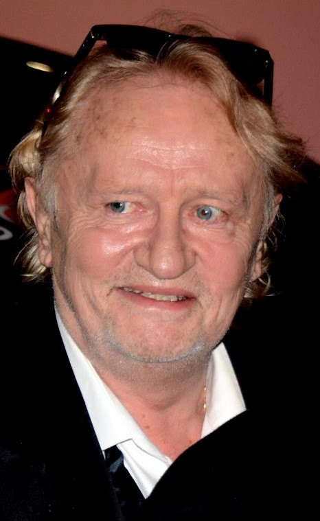
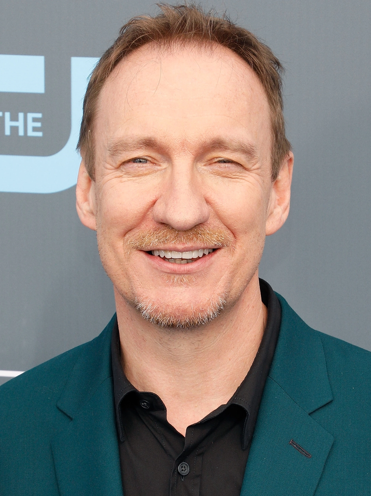

Ator Princial, Jeremy William Fredric Smith (Albert Narracott)
Sobre
Atividade: Ator
Nome de nascimento: Jeremy William Fredric Smith
Nacionalidade: Britânico
Nascimento: 18 de junho de 1990
Idade: 31 anos
Jeremy William Fredric Smith é um ator britânico, mais conhecido por interpretar Albert no filme de guerra War Horse e por interpretar o Jovem Sam em Mamma Mia! Here We Go Again. Atualmente com 31 anos nascido Gamlingay, 18 de junho de 1990. Em 2010, o diretor Steven Spielberg planejado um filme para Cavalo de Guerra, o romance infantil de Michael Morpurgo, e afirmou que ele estava procurando um ator desconhecido para levar o papel "Albert Naracott" (o personagem principal de Cavalo de Guerra), "Eu olhei para centenas de atores e os recém-chegados para Albert - principalmente os recém-chegados - e ninguém tinha o coração, o espírito ou as habilidades de comunicação que Jeremy tinha" Spielberg também disse:"Eu estou acostumado a trabalhar com atores que não têm experiência. Basta olhar para trás, para as crianças de ET, como Drew Barrymore, e Christian Bale em O Império do Sol, que nunca tinha feito um filme antes. Essa carreira poderia à espera de Jeremy [Irvine]". A audição durou por dois meses com Irvine fazendo testes várias vezes por semana.
Toby Kebbel

Toby Kebbel (Geordie)
Sobre
Atividade: Ator
Nome de nascimento: Tobias Alistair P. Kebbell
Nacionalidade: Britânico
Nascimento: 9 de julho de 1982 (Pontefract, Yorkshire, Inglaterra, Reino Unido)
Idade: 39 anos
Tobias Alistair Patrick Kebbell, conhecido como Toby Kebbell [2][3] (Yorkshire, 9 de julho de 1982), é um ator inglês, mais conhecido por seus papéis nos filmes Vingança Redentora (2004), RocknRolla (2008), Príncipe da Pérsia: As Areias do Tempo (2008), O Aprendiz de Feiticeiro (2010), Cavalo de Guerra (2011), Black Mirror, Wrath of the Titans (2012), Dawn of the Planet of the Apes (2014), Fantastic Four (2015), Ben-Hur (2016), Bloodshot (2020) e a série Servant (desde 2019).
Tom Hiddleston

Tom Hiddleston (Capitão Nicholls)
Sobre
Atividades: Ator, Produtor Executivo
Nome de nascimento: Thomas William Hiddleston
Nacionalidade: Britânico
Nascimento: 9 de fevereiro de 1981 (Westminster, Londres, Inglaterra, Reino Unido)
Idade: 41 anos
Thomas 'Tom' William Hiddleston é um ator britânico, conhecido pelo papel de Loki no Multiverso Cinematográfico Marvel. Em 2017 recebeu o Globo de Ouro de melhor ator em minissérie ou filme para a televisão por sua atuação na minissérie The Night Manager. Foi indicado ao Emmy pelo mesmo papel. Tom nasceu em Westminster, Londres e é filho de Diana Patricia (uma ex-encenadora e administradora artística) e Dr. James Norman Hiddleston (um cientista nascido na Escócia e ex-diretor administrativo da área da biotecnologia).
Céline Buckens

Celine Buckens (Emillie)
Sobre
Atividades: Atriz
Nome de nascimento: Celine Buckens Bridgerton
Nacionalidade: belga-britânica
Nascimento: 9 de agosto de 1996
Idade: 25 anos
Céline Buckens é uma atriz belga-britânica. Depois de aparecer no filme War Horse de 2011, ela interpretou o papel de Mia MacDonald na série Free Rein da Netflix de 2017 a 2019. Atualmente com 25 anos de idade, nascida em 9 de agosto de 1996 Bruxelas, Bélgica.A carreira de atriz de Buckens começou quando ela interpretou Émilie no filme de 2011 de Steven Spielberg, Cavalo de Guerra, um papel que ela ganhou após duas audições. A personagem é uma jovem francesa que vive em uma fazenda com o avô depois que perdeu os pais na guerra. Em 2015, Buckens estrelou um curta-metragem intitulado The Rain Collector, como Vanessa Kentworth.
De 2017 a 2019, Buckens estrelou a série dramática da Netflix Free Rein como Mia MacDonald. Ela também apareceu em um episódio do drama da ITV Endeavor em 2017, como Daisy Bennett. Em 2018, ela estrelou Ne M'oublie Pas (Inglês: Forget Me Not), um curta-metragem francês, como a personagem principal Elsa. Em novembro de 2019, ela apareceu no filme de drama e suspense The Good Liar como Annalise. Em maio de 2019, foi anunciado que Buckens havia se juntado ao elenco principal da série de ação do Cinemax, Warrior. Ela retrata o papel de Sophie Mercer da segunda série em diante. Em 2021, ela interpretou Talitha Campbell no drama legal da BBC Showtrial. Buckens também fez sua estreia na direção em 2021, depois de dirigir o curta-metragem Prangover, pelo qual foi premiada como Melhor Diretora no Festival Internacional de Cinema do Nordeste de 2021.
Peter Mullan

Peter Mullan (Ted Narracot)
Sobre
Atividades: Ator, Diretor, Roteirista
Nacionalidade: Britânico
Nascimento: 2 de novembro de 1959 (Peterhead, Escócia, Reino Unido)
Idade: 62 anos
Peter Mullan, nascido em 2 de novembro de 1959 é um ator e cineasta escocês. Ele é mais conhecido por seu papel em My Name Is Joe (1998), de Ken Loach , pelo qual ganhou o prêmio de Melhor Ator no Festival de Cannes de 1998 , e The Claim (2000). Ele também é vencedor do Prêmio Especial do Júri Dramático Mundial por Performances Breakout no Festival de Cinema de Sundance de 2011 por seu trabalho em Tiranossauro de Paddy Considine (2011). Mullan apareceu como ator coadjuvante ou convidado em vários filmes cult, incluindoRiff-Raff (1991), Braveheart (1995), Trainspotting (1996), Young Adam (2003), Children of Men (2006), os dois últimos filmes de Harry Potter (2010-11) e War Horse (2011).
Benedict Cumberbatch
Benedict Cumberbatch (Major Jamie)
Sobre
Atividades: Ator, Produtor Executivo, Produtor
Nome de nascimento: Benedict Timothy Carlton Cumberbatch
Nacionalidade: Britânico
Nascimento: 19 de julho de 1976 (Londres, Inglaterra)
Idade: 45 anos
Benedict Timothy Carlton Cumberbatch CBE (Hammersmith, Londres, 19 de julho de 1976) é um ator britânico mais conhecido pelos seus papéis como Sherlock Holmes na série de televisão Sherlock da BBC e como Stephen Strange/Doutor Estranho no Universo Cinematográfico Marvel. Além disso fez a Captura de movimento e utilizou a própria voz para interpretar o dragão Smaug na trilogia de The Hobbit. Outros papéis como Alan Turing, no filme The Imitation Game, Khan em Star Trek: Into Darkness e Julian Assange em The Fifth Estate foram alguns sucessos do ator.
Niels Arestrup

Niels Arestrup (avô)
Sobre
Atividades: Ator
Nacionalidade: Francês
Nascimento: 8 de fevereiro de 1949 (n: 8 de fevereiro de 1949 em Montreuil, Seine-Saint-Denis, França)
Idade: 73 anos
Arestrup nasceu em Paris em uma família de meios modestos; seu pai era dinamarquês e sua mãe era bretã.
Arestrup ganhou três prêmios César de Melhor Ator Coadjuvante por The Beat That My Heart Skipped e A Prophet, depois Quai d'Orsay. Os dois primeiros filmes foram dirigidos por Jacques Audiard. Ele é o mais premiado nesta categoria.
Nascimento: 14 de janeiro de 1967 (Islington, Londres, Inglaterra, Reino Unido)
Idade: 55 anos
Emily Margaret Watson (Islington, 14 de janeiro de 1967) é uma atriz britânica. Ela começou sua carreira no teatro na Royal Shakespeare Company em 1992. Em 2002, estrelou as produções Noite de Reis e Tio Vânia, e foi indicada para o Laurence Olivier Award de melhor atriz por este último.
Ela foi nomeada para o Oscar de melhor atriz por seu papel de estreia no filme Ondas do Destino de Lars von Trier e por seu papel como Jacqueline du Pré, em Hilary e Jackie (1998), vencendo o British Independent Film Award por este último. Por seu papel como Margaret Humphreys em Laranjas e Sol (2010), ela também foi indicada para o AACTA Award de melhor atriz principal.
David Thewlis

David Thewlis (Lyons)
Sobre
Atividades: Ator
Nome de nascimento: David Wheeler
Nacionalidade: Britânico
Nascimento: 20 de março de 1963 (Blackpool, Lancashire, Inglaterra)
Idade: 59 anos
David Wheeler (nascido em 20 de março de 1963), mais conhecido como David Thewlis, é um ator, diretor, roteirista e autor inglês.
Thewlis ganhou destaque quando estrelou o filme Naked (1993), pelo qual ganhou o Prêmio Festival de Cinema de Cannes de Melhor Ator . Seus papéis de maior sucesso comercial foram Remus Lupin na franquia Harry Potter (2004–2011) e Sir Patrick Morgan / Ares em Mulher Maravilha (2017). Outros papéis no cinema incluem Eclipse Total (1995), James and the Giant Peach (1996), Dragonheart (1996), Seven Years in Tibet (1997), Kingdom of Heaven (2005), The Boy in the Striped Pijamas (2008), War Cavalo(2011), The Theory of Everything (2014), Anomalisa (2015) e I'm Thinking of Ending Things (2020). Ele aparecerá em Enola Holmes 2 (2022) e Avatar 3 (2024).